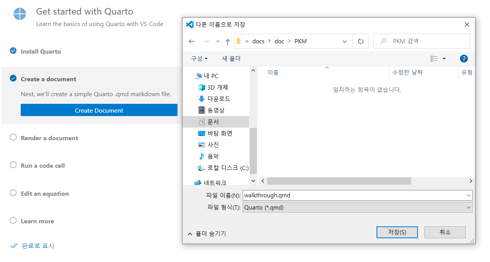

quarto
설치
- quarto 홈페이지에서 운영체제에 맞는 파일을 받아 실행
- 맥 Homebrew 설치:
brew install --cask quarto
vscode에서 사용 tutorial
- vscode에서 quarto vscode extension 설치

- quarto 문서 만들기

walkthrough.qmd 문서가 열린다.
- walkthrough.qmd 파일을 렌더링하여 html 파일로 변환한다.

변환하면 같은 폴더에 walkthrough.html 파일과 walkthrough_files 폴더가 만들어진다.
주피터 노트북 사용 tutorial
yml 설정
- 코드 블록 숨기기/보이기 설정
- 코드 블록 숨기기/보이기 버튼 우측 상단에 보이게 설정
웹사이트 만들기
==주의할 점!!!== 나는 깃허브에 quarto 리포를 먼저 만들고 로컬에 클론했다. 그래서 Website Project를 선택한 뒤 나타는 창에서 반드시 quarto 폴더의 부모 폴더를 선택해야 한다. 그러고 나서 뜨는 입력 창에 웹사이트의 홈 폴더로 사용할 깃허브 폴더명인 quarto를 입력한다. 그러면 quarto 폴더 안에 아래처럼 _quarto.yml, index.qmd, about.qmd, style.css 파일이 만들어진다.

- 미리보기 : 문서 우측 위의 render 버튼 클릭한다. 변경한 후 다시 render 버튼을 눌러야 반영된다.
- 최종 html 파일 만들기: 터미널에서 quarto render -> _site 폴더에 html 파일이 만들어진다.
깃허브 페이지를 호스팅 서버로 사용하기
3가지 방법이 있다.
- docs 폴더에 사이트 문서들을 렌더링하고 깃허브가 docs 폴더를 웹페이지로 출판하도록 설정
quarto publish명령으로 직접 웹페이지로 출판- 코드를 깃허브에 올리면 자동으로 깃허브 액션이 렌더링해서 출판하도록 설정